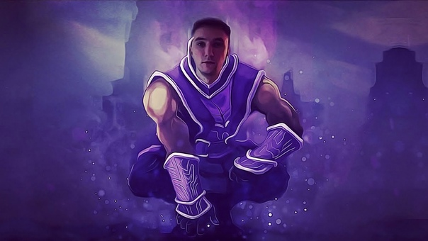

Лучшие песни СЕРЕГИ ПИРАТА
Серега Пират (aka Перега Сират), также известный в мире как Серега Талант, является стримером по игре Dota 2 на платформе YouTube (не Twitch).
Сергей занимается музыкой – он пишет невероятные треки, от которых в состоянии шока и аудиооргазма находятся все его слушатели
(если у них, конечно, выключен звук).
"Тп на аме" - 2 187 000 прослушиваний

Песня "ТП НА АМЕ" посвящена легендарному моменту: враги ломали базу, и Сергей, игравший за героя Anti-Mage, принял волевое решение.
Понимая, что в одиночку базу не защитить, он решил нажать телепорт на базу противника, но отвлекся и случайно его отменил. Враги сломали трон.
На этом моменте плакали даже прошедшие Афганистан.
Клип выполнен в восхитительной Dota-стилистике
ТЕКСТ ПЕСНИ
КЛИП
"Гимн Дахака" - 1 421 000 прослушиваний

Данная композиция посвящена одновременно 3 легендам "Dota 2": Никите "Daxak" Кузьмину, Данииле "Dendi" Ишутину и
Тимуру "TpaBoMaH" Хафизову. В треке Сергей негодует из-за того, что "Dendi" провел плохую драку. Также он хочет, чтобы его называли все талантом,
но понимает, что это "место" занято Тимуром Хафизовым.
ТЕКСТ ПЕСНИ
КЛИП
"Я взлетаю вверх" - 970 000 прослушиваний
Одна из моих любимых песен, в которой Сергей поет о том, что несмотря на все проблемы и лишения, он может жить дальше и стать лучше.
Прекрасная песня, полная метафор. Особое внимание уделено вокалу. Пират великолепно спел. Он "разрушил жизнь, чтобы построить все с нуля".
Без звука эта композиция особо прекрасна. Рекомендую ее всем фанатам инди-рок-поп музыки.
ТЕКСТ ПЕСНИ
КЛИП